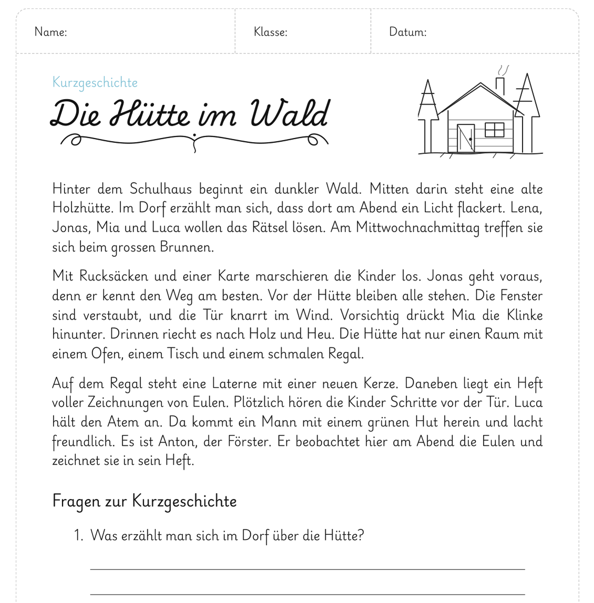
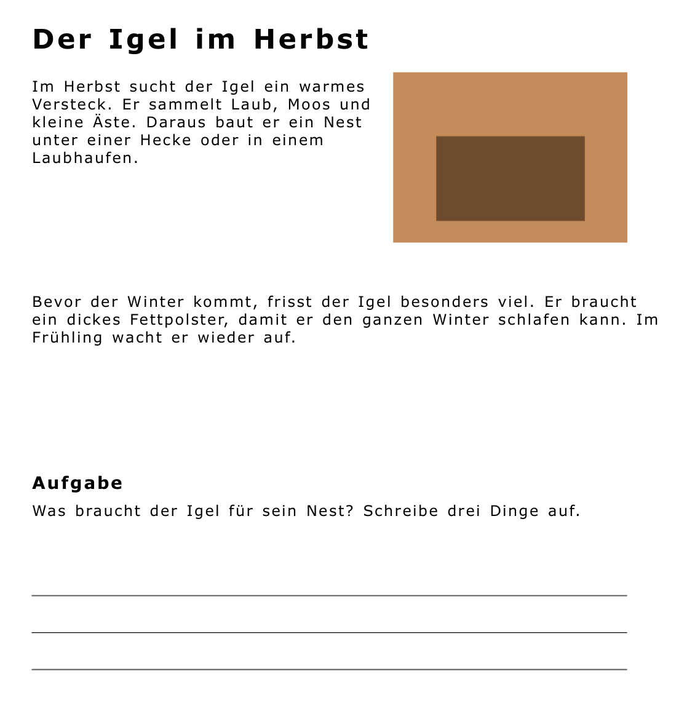

CVI PDF
Macht PDF-Arbeitsblätter für Kinder mit cerebraler visueller Beeinträchtigung (CVI) gut lesbar – ohne das Layout zu verändern. Auf dem iPad und dem Mac.
Was die App kann
- Klare SchriftVerdana oder Arial statt verschnörkelter oder enger Schriften.
- Mehr LuftZeilenabstand 1,5- oder 2-fach und mehr Abstand zwischen den Buchstaben.
- Layout bleibtJeder Text bleibt an seinem Platz. Bilder, Tabellen, Linien und Kästen werden nicht verändert.
- Auch gedruckte BlätterSeiten mit der iPad-Kamera scannen – die Texterkennung liest den Text.
- Barrierefreies PDFEchter Text mit Überschriften, Absätzen und Bildbeschreibungen für VoiceOver.
- Alles bleibt auf dem GerätKeine Anmeldung, keine Werbung, keine Daten im Internet.
Vorher und nachher


So geht es
- Öffnen: PDF aus «Dateien» wählen, ein Foto öffnen oder gedruckte Seiten scannen.
- Einstellen: Schrift, Zeilenabstand und Buchstabenabstand wählen. Die Vorschau zeigt sofort das Ergebnis.
- Speichern: Das neue PDF heisst Name_CVI.pdf und liegt in «Dateien» – bereit für das iPad des Kindes.
Voraussetzung: iPad mit iPadOS 18 oder neuer, Mac mit macOS 15 oder neuer.